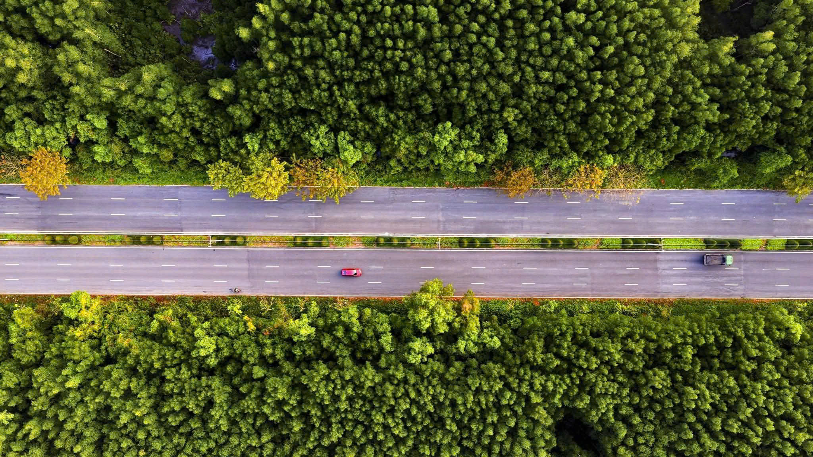

1 Ngày / Khởi hành hằng ngày

Eco Escape: Thức Tỉnh Năng Lượng Rừng Sác
Lịch Trình 1 Ngày- 07:30 - 09:00: Khởi hành từ trung tâm Sài Gòn, di chuyển qua phà Bình Khánh ngắm cảnh sông Soài Rạp và chạy dọc đường Rừng Sác rợp bóng cây xanh.
- 09:30 - 12:00: Đi ca-nô hoặc thuyền gỗ len lỏi vào rừng ngập mặn Vàm Sát, chèo thuyền nan ngắm Đầm Dơi hoang dã và leo tháp Tang Bồng ngắm toàn cảnh rừng.
- 12:30 - 14:00: Thưởng thức bữa trưa hải sản tươi sống phong vị bản địa tại nhà hàng ven sông hoặc chợ Hàng Dương.
- 14:30 - 16:30: Dạo bước trên cầu Nam Hải ngắm biển 30/4, mua sắm đặc sản mắm cá, khô cá đù và thưởng thức dừa nước mát lạnh.
- 17:00: Lên đường về lại trung tâm TP.HCM, kết thúc một ngày du ngoạn trọn vẹn.
2 Ngày 1 Đêm / Cuối tuần lý tưởng

Coastal & Wellness: Chữa Lành Nơi Ốc Đảo
Lịch Trình 2N1Đ- Ngày 1: Khởi hành đến resort/homestay ven rừng ngập mặn Cần Giờ, nghỉ ngơi thư giãn, trải nghiệm chèo SUP ngắm hoàng hôn lạch rừng đước & thưởng thức tiệc BBQ hải sản tối.
- Ngày 2: Đón bình minh bãi biển Cần Giờ, đi thuyền gỗ ra ấp đảo Thiềng Liềng, thưởng thức đờn ca tài tử và thư giãn với ngâm chân thảo dược muối Cần Giờ.
3 Ngày 2 Đêm / Trải nghiệm chuyên sâu

Deep Mangrove Expedition: Thám Hiểm Rừng Sâu
Lịch Trình 3N2Đ- Ngày 1: Khám phá sâu vùng lõi sinh quyển, quan sát động thực vật hoang dã cùng cán bộ kiểm lâm bảo tồn rừng ngập mặn.
- Ngày 2: Trải nghiệm một ngày làm ngư dân: giăng lưới bắt cá bống thòi lòi, cào nghêu bãi bồi Long Hòa và nấu bữa trưa tại bè nổi.
- Ngày 3: Tìm hiểu văn hóa di tích khảo cổ Giồng Phệt - Giồng Cá Vồ, viếng Lăng Ông Thủy Tướng và mua sắm đặc sản yến sào Cần Giờ.

Kinh Nghiệm & Lưu Ý Quan Trọng Khi Khám Phá Cần Giờ
Cẩm Nang Tự Túc- Di chuyển qua Phà Bình Khánh: Giờ cao điểm cuối tuần phà có thể đông, nên xuất phát trước 7h sáng hoặc sau 8h30 sáng để tránh ùn ứ.
- Đường Rừng Sác: Đường dài khoảng 40km chạy thẳng tắp, nhiều chốt CSGT kiểm tra tốc độ (giới hạn 60km/h), du khách nhớ đi đúng tốc độ và làn đường quy định.
- Tham quan Đảo Khỉ: Cất giữ cẩn thận điện thoại, kính mắt, nón và ví tiền vì bầy khỉ hoang dã rất nhanh tay giật đồ.
- Ăn uống chợ Hàng Dương: Nên tự tay chọn hải sản sống tại thau rổ và yêu cầu chế biến tại chỗ để đảm bảo tươi ngon và đúng giá.
- Ý thức bảo vệ môi trường: Luôn gom rác mang về nơi quy định để chung tay bảo vệ Khu dự trữ sinh quyển rừng ngập mặn UNESCO.